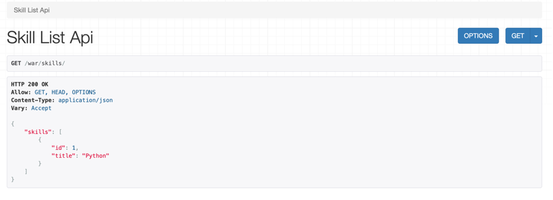
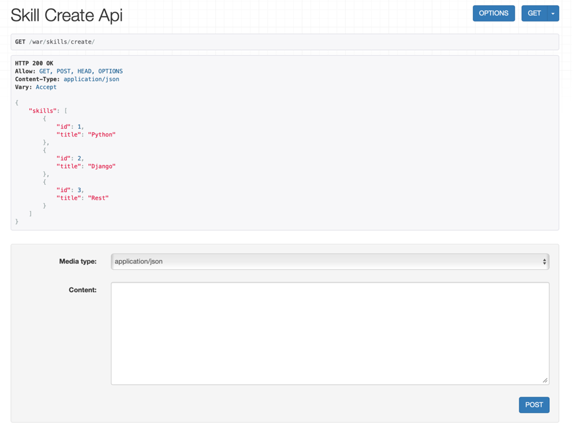
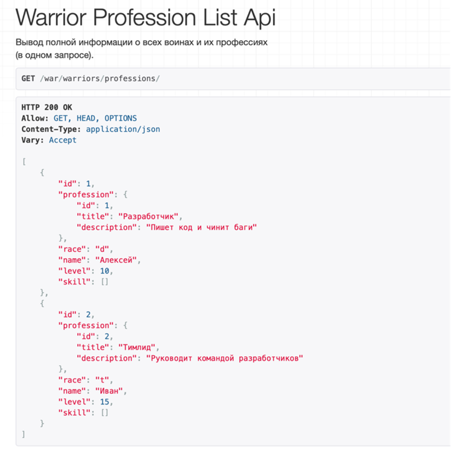
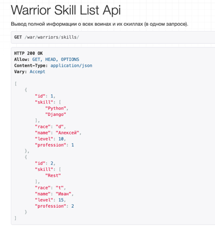
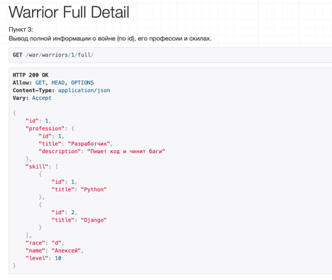
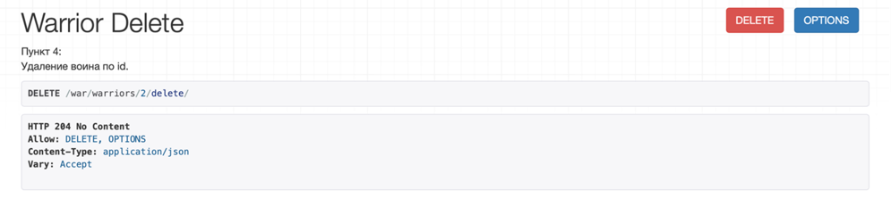
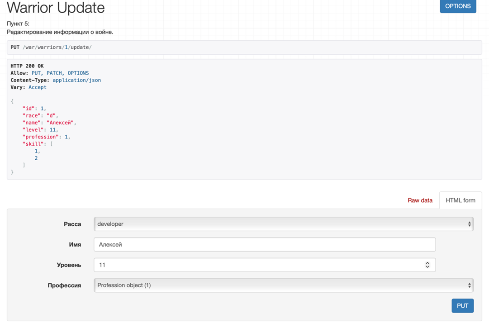

Лабораторная работа 3. Реализация серверной части на Django REST.
Практическая работа 3.2
Проект:
warriors_projectс приложениемwarriors_app.
База: SQLite.
Фреймворк для API: Django REST Framework.
0. Подготовка проекта
0.1. Создание и активация виртуального окружения
В терминале (macOS):
python3 -m venv venv
source venv/bin/activate
0.2. Установка зависимостей
pip install django djangorestframework
0.3. Создание проекта и приложения
django-admin startproject warriors_project
cd warriors_project
python manage.py startapp warriors_app
0.4. Подключение приложения и DRF
warriors_project/settings.py → INSTALLED_APPS:
INSTALLED_APPS = [
# стандартные приложения Django …
'rest_framework',
'warriors_app',
]
1. Модели данных
Цель: описать доменную область «Воин — Профессия — Умения» с помощью моделей Django.
warriors_app/models.py:
from django.db import models
class Warrior(models.Model):
"""
Описание война
"""
race_types = (
('s', 'student'),
('d', 'developer'),
('t', 'teamlead'),
)
race = models.CharField(max_length=1, choices=race_types, verbose_name='Расса')
name = models.CharField(max_length=120, verbose_name='Имя')
level = models.IntegerField(verbose_name='Уровень', default=0)
skill = models.ManyToManyField(
'Skill',
verbose_name='Умения',
through='SkillOfWarrior',
related_name='warrior_skils',
)
profession = models.ForeignKey(
'Profession',
on_delete=models.CASCADE,
verbose_name='Профессия',
blank=True,
null=True,
)
def __str__(self):
return f'{self.name} (lvl {self.level})'
class Profession(models.Model):
"""
Описание профессии
"""
title = models.CharField(max_length=120, verbose_name='Название')
description = models.TextField(verbose_name='Описание')
def __str__(self):
return self.title
class Skill(models.Model):
"""
Описание умений
"""
title = models.CharField(max_length=120, verbose_name='Наименование')
def __str__(self):
return self.title
class SkillOfWarrior(models.Model):
"""
Описание умений война (через таблицу связи)
"""
skill = models.ForeignKey('Skill', verbose_name='Умение', on_delete=models.CASCADE)
warrior = models.ForeignKey('Warrior', verbose_name='Воин', on_delete=models.CASCADE)
level = models.IntegerField(verbose_name='Уровень освоения умения')
def __str__(self):
return f'{self.warrior} — {self.skill} (lvl {self.level})'
После описания моделей выполняем миграции:
python manage.py makemigrations
python manage.py migrate
2. Регистрация моделей в админке и наполнение БД
2.1. Регистрация моделей
warriors_app/admin.py:
from django.contrib import admin
from .models import Warrior, Profession, Skill, SkillOfWarrior
@admin.register(Warrior)
class WarriorAdmin(admin.ModelAdmin):
list_display = ('id', 'name', 'race', 'level', 'profession')
list_filter = ('race', 'profession')
@admin.register(Profession)
class ProfessionAdmin(admin.ModelAdmin):
list_display = ('id', 'title')
@admin.register(Skill)
class SkillAdmin(admin.ModelAdmin):
list_display = ('id', 'title')
@admin.register(SkillOfWarrior)
class SkillOfWarriorAdmin(admin.ModelAdmin):
list_display = ('id', 'warrior', 'skill', 'level')
Создаём суперпользователя и заходим в админку:
python manage.py createsuperuser
python manage.py runserver
Переходим в браузере по адресу http://127.0.0.1:8000/admin/ и создаём:
- несколько профессий (например, «Разработчик», «Тимлид»);
- несколько умений («Python», «Django», «REST»);
- 2–3 воинов с выбранной профессией;
- записи
SkillOfWarrior, чтобы привязать к каждому воину 1–3 скилла.
Скриншоты:
-
Список профессий в админке
 -
Список воинов и их профессий
 -
Таблица SkillOfWarrior с уровнями владения навыками

3. Настройка сериализаторов
Создаём файл warriors_app/serializers.py.
from rest_framework import serializers
from .models import Warrior, Profession, Skill
3.1. Базовый сериализатор воина и создание профессии
class WarriorSerializer(serializers.ModelSerializer):
"""
Базовый сериализатор модели Warrior.
Используется для операций обновления/удаления.
"""
class Meta:
model = Warrior
fields = '__all__'
class ProfessionCreateSerializer(serializers.Serializer):
"""
Пример «ручного» сериализатора для создания профессии.
Используется в теоретической части работы.
"""
title = serializers.CharField(max_length=120)
description = serializers.CharField()
def create(self, validated_data):
profession = Profession(**validated_data)
profession.save()
return profession
3.2. Сериализатор скилла
class SkillSerializer(serializers.ModelSerializer):
"""
Сериализатор для модели Skill.
"""
class Meta:
model = Skill
fields = '__all__'
3.3. Сериализатор профессии
class ProfessionSerializer(serializers.ModelSerializer):
"""
Сериализатор для модели Profession.
Используется как вложенный.
"""
class Meta:
model = Profession
fields = '__all__'
3.4. Вложенный сериализатор «воин + профессия»
Используется для эндпоинта «все воины и их профессии».
class WarriorProfessionSerializer(serializers.ModelSerializer):
"""
Воин с вложенным объектом профессии.
"""
profession = ProfessionSerializer()
class Meta:
model = Warrior
fields = '__all__'
3.5. Сериализатор «воин + список названий скиллов»
Использует SlugRelatedField для красивого представления ManyToMany-связи.
class WarriorSkillSerializer(serializers.ModelSerializer):
"""
Воин с перечнем его умений (только названия).
"""
skill = serializers.SlugRelatedField(
many=True,
read_only=True,
slug_field='title',
)
class Meta:
model = Warrior
fields = '__all__'
3.6. Полный вложенный сериализатор «воин + профессия + объекты скиллов»
Используется для подробного вывода информации по одному воину.
class WarriorNestedSerializer(serializers.ModelSerializer):
"""
Полная информация о войне:
- вложенная профессия;
- список умений как объектов Skill.
"""
profession = ProfessionSerializer()
skill = SkillSerializer(many=True)
class Meta:
model = Warrior
fields = '__all__'
4. Реализация эндпоинтов для работы со скиллами (APIView)
Практическое задание:
Реализовать эндпоинты для добавления и просмотра скиллов методом, описанным в теории (через APIView).
4.1. Представления
warriors_app/views.py (фрагмент):
from rest_framework.views import APIView
from rest_framework.response import Response
from rest_framework.generics import (
ListAPIView,
RetrieveAPIView,
DestroyAPIView,
UpdateAPIView,
)
from .models import Warrior, Profession, Skill
from .serializers import (
WarriorSerializer,
ProfessionCreateSerializer,
SkillSerializer,
ProfessionSerializer,
WarriorProfessionSerializer,
WarriorSkillSerializer,
WarriorNestedSerializer,
)
Классы для работы со скиллами:
class SkillListAPIView(APIView):
"""
Список всех доступных умений (GET).
"""
def get(self, request):
skills = Skill.objects.all()
serializer = SkillSerializer(skills, many=True)
return Response({'skills': serializer.data})
class SkillCreateAPIView(APIView):
"""
Создание нового умения (POST).
"""
def get(self, request):
"""
GET-запрос используется только для отображения формы DRF.
"""
skills = Skill.objects.all()
serializer = SkillSerializer(skills, many=True)
return Response({'skills': serializer.data})
def post(self, request):
"""
Ожидаемый формат тела запроса:
{
"skill": {
"title": "Python"
}
}
"""
skill_data = request.data.get('skill')
serializer = SkillSerializer(data=skill_data)
if serializer.is_valid(raise_exception=True):
skill_saved = serializer.save()
return Response({'Success': f"Skill '{skill_saved.title}' created successfully."})
4.2. URL-маршруты
warriors_app/urls.py:
from django.urls import path
from .views import (
SkillListAPIView,
SkillCreateAPIView,
WarriorProfessionListAPIView,
WarriorSkillListAPIView,
WarriorFullDetailView,
WarriorDeleteView,
WarriorUpdateView,
)
app_name = 'warriors_app'
urlpatterns = [
path('skills/', SkillListAPIView.as_view(), name='skill-list'),
path('skills/create/', SkillCreateAPIView.as_view(), name='skill-create'),
# остальные маршруты — в следующих разделах
]
warriors_project/urls.py:
from django.contrib import admin
from django.urls import path, include
urlpatterns = [
path('admin/', admin.site.urls),
path('war/', include('warriors_app.urls')),
]
4.3. Проверка работы
- Запускаем сервер:
python manage.py runserver. -
Переходим в браузере по адресу:
-
http://127.0.0.1:8000/war/skills/— просмотр списка скиллов; -
http://127.0.0.1:8000/war/skills/create/— создание нового умения. -
Для создания указываем JSON в формате:
{
"skill": {
"title": "Python"
}
}
Скриншоты:
-
Список умений (GET /war/skills/)

-
Создание нового умения (POST /war/skills/create/)

5. Эндпоинт: все воины и их профессии (ListAPIView)
Пункт 1 практического задания блока:
Вывод полной информации о всех воинах и их профессиях (в одном запросе).
5.1. Представление
warriors_app/views.py:
class WarriorProfessionListAPIView(ListAPIView):
"""
Список всех воинов с подробной информацией о профессии.
"""
queryset = Warrior.objects.select_related('profession').all()
serializer_class = WarriorProfessionSerializer
5.2. URL-маршрут
warriors_app/urls.py (добавление):
urlpatterns = [
# ...
path(
'warriors/professions/',
WarriorProfessionListAPIView.as_view(),
name='warrior-profession-list',
),
]
5.3. Проверка
Запрос:
GET http://127.0.0.1:8000/war/warriors/professions/
Пример ответа:
[
{
"id": 1,
"race": "d",
"name": "Алексей",
"level": 10,
"profession": {
"id": 1,
"title": "Разработчик",
"description": "Пишет код и чинит баги"
},
"skill": [1, 2]
},
{
"id": 2,
"race": "t",
"name": "Иван",
"level": 15,
"profession": {
"id": 2,
"title": "Тимлид",
"description": "Руководит разработчиками"
},
"skill": [3]
}
]
Скриншот:

6. Эндпоинт: все воины и их скиллы
Пункт 2 практического задания:
Вывод полной информации о всех воинах и их скиллах (в одном запросе).
6.1. Представление
warriors_app/views.py:
class WarriorSkillListAPIView(ListAPIView):
"""
Список всех воинов и их умений.
Для вывода умений используется SlugRelatedField (только названия).
"""
queryset = Warrior.objects.prefetch_related('skill').all()
serializer_class = WarriorSkillSerializer
6.2. URL-маршрут
warriors_app/urls.py:
urlpatterns = [
# ...
path(
'warriors/skills/',
WarriorSkillListAPIView.as_view(),
name='warrior-skill-list',
),
]
6.3. Проверка
Запрос:
GET http://127.0.0.1:8000/war/warriors/skills/
Пример ответа:
[
{
"id": 1,
"race": "d",
"name": "Алексей",
"level": 10,
"profession": 1,
"skill": ["Python", "Django"]
},
{
"id": 2,
"race": "t",
"name": "Иван",
"level": 15,
"profession": 2,
"skill": ["REST"]
}
]
Скриншот:

7. Эндпоинты для работы с одним воином (Retrieve / Update / Destroy)
Пункты 3–5 практического задания:
- Вывод полной информации о войне (по id), его профессиях и скилах.
- Удаление воина по id.
- Редактирование информации о войне.
Для каждого пункта реализован отдельный generic-класс и отдельный URL.
7.1. Полная информация о войне по id (RetrieveAPIView)
warriors_app/views.py:
class WarriorFullDetailView(RetrieveAPIView):
"""
Пункт 3:
Вывод полной информации о войне (по id), его профессии и скилах.
Используется вложенный сериализатор WarriorNestedSerializer.
"""
queryset = Warrior.objects.select_related('profession').prefetch_related('skill').all()
serializer_class = WarriorNestedSerializer
lookup_field = 'id'
URL:
urlpatterns = [
# ...
path(
'warriors/<int:id>/full/',
WarriorFullDetailView.as_view(),
name='warrior-full-detail',
),
]
Запрос:
GET http://127.0.0.1:8000/war/warriors/1/full/
Пример ответа:
{
"id": 1,
"race": "d",
"name": "Алексей",
"level": 10,
"profession": {
"id": 1,
"title": "Разработчик",
"description": "Пишет код и чинит баги"
},
"skill": [
{
"id": 1,
"title": "Python"
},
{
"id": 2,
"title": "Django"
}
]
}
Скриншот:

7.2. Удаление воина по id (DestroyAPIView)
warriors_app/views.py:
class WarriorDeleteView(DestroyAPIView):
"""
Пункт 4:
Удаление воина по id.
"""
queryset = Warrior.objects.all()
serializer_class = WarriorSerializer
lookup_field = 'id'
URL:
urlpatterns = [
# ...
path(
'warriors/<int:id>/delete/',
WarriorDeleteView.as_view(),
name='warrior-delete',
),
]
Проверка:
- Открыть в браузере
http://127.0.0.1:8000/war/warriors/1/delete/. - В выпадающем списке методов выбрать DELETE.
- Нажать кнопку DELETE.
Скриншот:

7.3. Редактирование информации о войне по id (UpdateAPIView)
warriors_app/views.py:
class WarriorUpdateView(UpdateAPIView):
"""
Пункт 5:
Редактирование информации о войне по id.
"""
queryset = Warrior.objects.all()
serializer_class = WarriorSerializer
lookup_field = 'id'
URL:
urlpatterns = [
# ...
path(
'warriors/<int:id>/update/',
WarriorUpdateView.as_view(),
name='warrior-update',
),
]
Проверка:
- Открыть
http://127.0.0.1:8000/war/warriors/1/update/. - В форме изменить необходимые поля
(например, увеличить
levelи поменятьprofession). - Выбрать метод PUT или PATCH и отправить запрос.
После успешного обновления можно повторно запросить:
GET http://127.0.0.1:8000/war/warriors/1/full/
и убедиться, что изменения применились.
Скриншот:

8. Вывод
В ходе практической работы 3.2 были выполнены следующие шаги:
- Создан проект
warriors_projectи приложениеwarriors_app, настроен Django REST Framework. - Описаны модели
Warrior,Profession,Skill,SkillOfWarriorи зарегистрированы в админке. - Реализованы сериализаторы:
- базовые (
WarriorSerializer,ProfessionSerializer,SkillSerializer); - вложенные (
WarriorProfessionSerializer,WarriorSkillSerializer,WarriorNestedSerializer). - С помощью
APIViewреализованы эндпоинты для просмотра и добавления умений. - С помощью generic-классов
ListAPIView,RetrieveAPIView,DestroyAPIView,UpdateAPIViewреализованы: - вывод списка воинов с профессиями;
- вывод списка воинов с их скиллами;
- вывод полной информации о войне (по id), включая профессию и список умений;
- удаление воина по id;
- редактирование информации о войне.
- Работа всех эндпоинтов проверена через DRF browsable API, подготовлены скриншоты для отчёта.
Проект демонстрирует использование Django REST Framework для построения CRUD‑API со сложными связями между моделями и вложенной сериализацией данных.